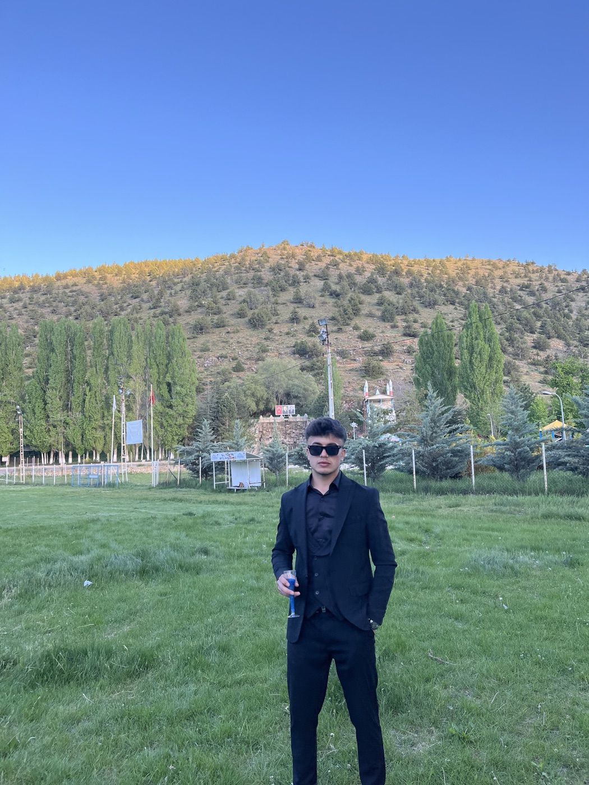

Ahmet Tilki
Girişimci · CanlıPazar, Nanofy, Kubrivo ve CanlıMenkul'ün kurucusu
- Doğum tarihi
- 12 Ekim 2007 (18 yaşında)
- Doğum yeri
- Kahramanmaraş, Türkiye
- Meslek
- Girişimci, mobil uygulama geliştiricisi
- Uygulamaları
- CanlıPazar, Nanofy, Kubrivo, CanlıMenkul
- Projeleri
- Pedesta, Tilki
Ahmet Tilki kimdir?
Ahmet Tilki (d. 12 Ekim 2007, Kahramanmaraş), Türkiye'nin genç girişimcilerinden biridir. Henüz genç yaşta dört mobil uygulamayı App Store ve Google Play'de yayına almış; bu ürünleri fikir aşamasından tasarıma, yazılımdan yayına kadar bizzat geliştirmiştir.
Yayındaki uygulamaları farklı alanlarda gündelik ihtiyaçlara çözüm sunar: CanlıPazar üreticilerin hayvan, yem ve yöresel ürünlerini aracısız ve komisyonsuz satabildiği bir pazar yeridir. CanlıMenkul emlak ve vasıta ilanlarını bir araya getirir. Nanofy fotoğraf ve PDF dosyalarını hiçbir sunucuya göndermeden telefonda küçültür. Kubrivo ise kendine özgü mekaniğiyle öne çıkan bir bulmaca oyunudur.
Ahmet Tilki bugün iki yeni proje üzerinde çalışmaktadır. Pedesta, e-ticaret satıcılarının ürün reklamlarını hızlı ve profesyonel biçimde hazırlamasını sağlayan bir platformdur ve 2026'nın son çeyreğinde piyasaya çıkması planlanmaktadır. Tilki ise hastanelerde fiş alma ve vezne işlemlerini yapay zekâ desteğiyle dijitalleştiren akıllı bir cihazdır. Tilki'nin 2027'nin ilk yarısında kullanıma sunulması ve TEKNOFEST 2027'de yarışması hedeflenmektedir.

Yayındaki uygulamalar
CanlıPazar
Pazar yeri · App Store & Google PlayHayvan, yem ve yöresel ürünlerin aracısız ve komisyonsuz alınıp satıldığı, Türkiye geneline hitap eden canlı hayvan pazarı.
CanlıMenkul
Emlak ve vasıta · App Store & Google PlayKonut, arsa ve araç ilanlarını tek bir uygulamada buluşturan ilan platformu.
Nanofy
Araç · App Store & Google PlayFotoğraf ve PDF'leri istenen boyuta kadar küçülten, dosyaları hiçbir yere yüklemeden tamamen cihaz üzerinde çalışan uygulama.
Kubrivo
Oyun · App Store & Google PlayÇekirdekleri yükleyip satırları patlatmaya dayanan "Resonance Burst" mekaniğiyle özgün, çevrimdışı bir bulmaca oyunu.
Geliştirilen projeler
Pedesta
E-ticaret · 2026 4. çeyrekE-ticaret satıcılarının ürünleri için reklam görsellerini ve içeriklerini kolayca hazırlamasını sağlayan platform.
Tilki
Sağlık teknolojisi · 2027 ilk yarı · TEKNOFEST 2027Hastanelerde fiş alma ve vezne işlemlerini dijitalleştiren, yapay zekâ entegreli akıllı cihaz. Bekleme süresini tahmin eder, hastayı doğru birime yönlendirir; 65 yaş üstü için sadeleştirilmiş kullanım ve sesli etkileşim sunar.
Yol haritası
- BugünCanlıPazar, CanlıMenkul, Nanofy ve Kubrivo yayında
- 2026 · 4. çeyrekPedesta'nın piyasaya çıkışı
- 2027 · İlk yarıTilki'nin hastanelerde kullanıma sunulması
- 2027Tilki ile TEKNOFEST'e katılım